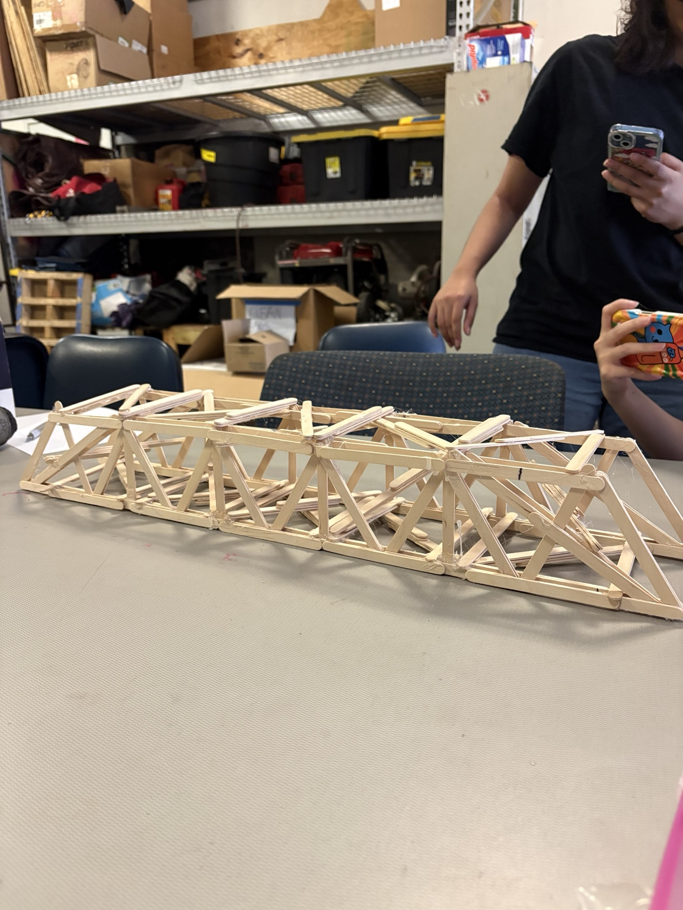

Steel Bridge Competition Team
Currently collaborating with the Steel Bridge team on structural design and fabrication. Constructed a popsicle-stick truss bridge prototype and recreated the design using steel as part of an ongoing engineering project.
Structural EngineeringSteel FabricationTeamworkOngoing